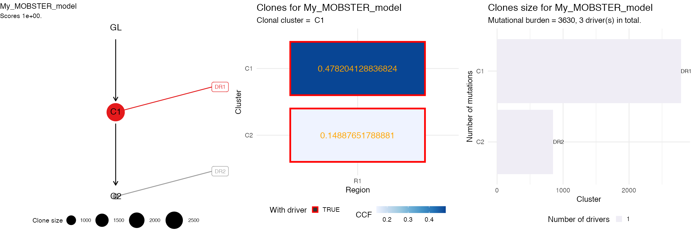

vignettes/a6_CloneTrees.Rmd
a6_CloneTrees.RmdClone trees from mobster fits can be computing using the internal interface with ctree.
You need to have drivers annotated your object if you want to use ctree, and every driver_label has to be unique, as it will be used as the variantID column to identify the driver event.
We show the analysis with a synthetic dataset.
# Example data where we annotate 3 events as drivers
example_data = Clusters(mobster::fit_example$best)
# Drivers annotation
drivers_rows = c(2239, 3246, 3800)
example_data$is_driver = FALSE
example_data$driver_label = NA
example_data$is_driver[drivers_rows] = TRUE
example_data$driver_label[drivers_rows] = c("DR1", "DR2", "DR3")
# Fit and print the data
fit = mobster_fit(example_data, auto_setup = 'FAST')
#> [ MOBSTER fit ]
#> ✔ Loaded input data, n = 5000.
#> ❯ n = 5000. Mixture with k = 1,2 Beta(s). Pareto tail: TRUE and FALSE. Output clusters with π > 0.02
#> and n > 10.
#> ! mobster automatic setup FAST for the analysis.
#> ❯ Scoring (without parallel) 2 x 2 x 2 = 8 models by reICL.
#> ℹ MOBSTER fits completed in 5.7s.
#> ── [ MOBSTER ] My MOBSTER model n = 5000 with k = 2 Beta(s) and a tail ─────────────────────────────────
#> ● Clusters: π = 55% [C1], 31% [Tail] and 14% [C2], with π > 0.
#> ● Tail [n = 1370, 31%] with alpha = 1.2.
#> ● Beta C1 [n = 2784, 55%] with mean = 0.48.
#> ● Beta C2 [n = 846, 14%] with mean = 0.15.
#> ℹ Score(s): NLL = -5671.5; ICL = -10359.09 (-11266.35), H = 907.26 (0). Fit converged by MM in 75
#> steps.
#> ℹ The fit object model contains also drivers annotated.
#> # A tibble: 3 x 7
#> VAF cluster Tail C1 C2 is_driver driver_label
#> <dbl> <chr> <dbl> <dbl> <dbl> <lgl> <chr>
#> 1 0.448 C1 0.0125 9.88e- 1 8.08e-21 TRUE DR1
#> 2 0.159 C2 0.225 2.35e-34 7.75e- 1 TRUE DR2
#> 3 0.0629 Tail 1.00 1.91e-82 4.02e- 5 TRUE DR3
best_fit = fit$best
print(best_fit)
#> ── [ MOBSTER ] My MOBSTER model n = 5000 with k = 2 Beta(s) and a tail ─────────────────────────────────
#> ● Clusters: π = 55% [C1], 31% [Tail] and 14% [C2], with π > 0.
#> ● Tail [n = 1370, 31%] with alpha = 1.2.
#> ● Beta C1 [n = 2784, 55%] with mean = 0.48.
#> ● Beta C2 [n = 846, 14%] with mean = 0.15.
#> ℹ Score(s): NLL = -5671.5; ICL = -10359.09 (-11266.35), H = 907.26 (0). Fit converged by MM in 75
#> steps.
#> ℹ The fit object model contains also drivers annotated.
#> # A tibble: 3 x 7
#> VAF cluster Tail C1 C2 is_driver driver_label
#> <dbl> <chr> <dbl> <dbl> <dbl> <lgl> <chr>
#> 1 0.448 C1 0.0125 9.88e- 1 8.08e-21 TRUE DR1
#> 2 0.159 C2 0.225 2.35e-34 7.75e- 1 TRUE DR2
#> 3 0.0629 Tail 1.00 1.91e-82 4.02e- 5 TRUE DR3Tree computation removes any mutation that is assigned to a Tail cluster because the clone tree represents the clones.
# Get the trees, select top-rank
trees = get_clone_trees(best_fit)
#> ✓ Loading ctree, 'Clone trees in cancer'. Support : <https://caravagn.github.io/ctree/>
#> [ ctree ~ generate clone trees for My_MOBSTER_model ]
#> Sampler : 10000 (cutoff), 5000 (sampling), 100 (max store)
#> # A tibble: 2 x 5
#> cluster R1 nMuts is.clonal is.driver
#> <chr> <dbl> <dbl> <lgl> <lgl>
#> 1 C2 0.149 846 FALSE TRUE
#> 2 C1 0.478 2784 TRUE TRUE
#>
#> ✔ Region R1 ~ #CCF clusters > 1%: 2
#> ✔ Trees per region 1
#> ✔ Hashed trees 1
#> There are no alternatives!
#> ✔ Pigeonhole Principle
#> ✔ Ranking trees
#> ✔ Trees with non-zero sscore 1 storing 1The top-rank tree is in position 1 of trees; ctree implements S3 object methods to print an plot a tree.
top_rank = trees[[1]]
# Print with S3 methods from ctree
ctree:::print.ctree(top_rank)
#> [ ctree - ctree rank 1/1 for My_MOBSTER_model ]
#>
#> # A tibble: 2 x 5
#> cluster R1 nMuts is.clonal is.driver
#> <chr> <dbl> <dbl> <lgl> <lgl>
#> 1 C2 0.149 846 FALSE TRUE
#> 2 C1 0.478 2784 TRUE TRUE
#>
#> Tree shape (drivers annotated)
#>
#> \-GL
#> \-C1 :: DR1
#> \-C2 :: DR2
#>
#> Information transfer
#>
#> DR1 ---> DR2
#> GL ---> DR1
#>
#> Tree score 1We can plot the top tree, aggregating different ctree plots.
# 1) Clone tree
# 2) Input ctree data (here adjusted VAF)
# 3) Clone size barplot
ggpubr::ggarrange(
ctree::plot.ctree(top_rank),
ctree::plot_CCF_clusters(top_rank),
ctree::plot_clone_size(top_rank),
nrow = 1,
ncol = 3
)